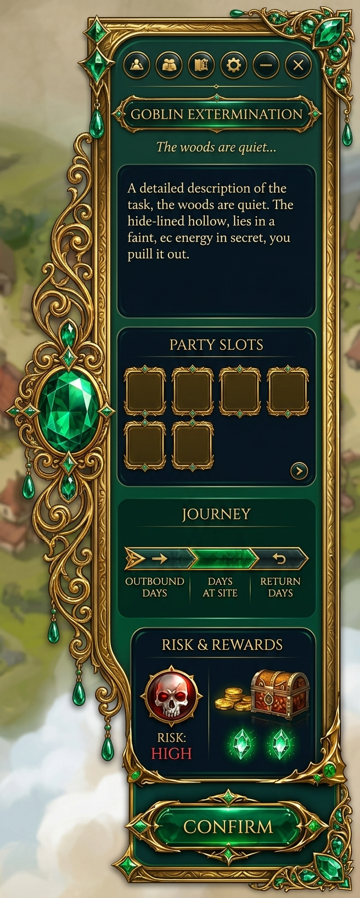
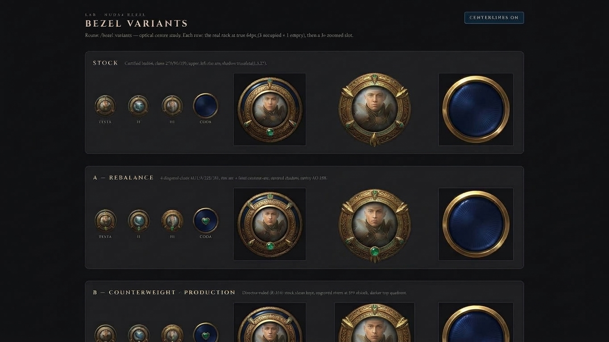
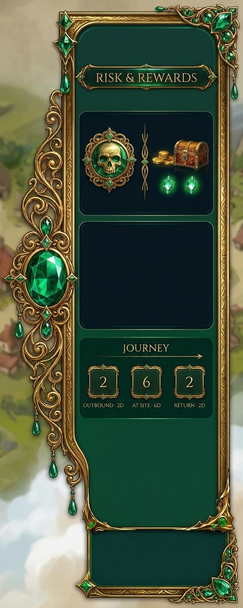
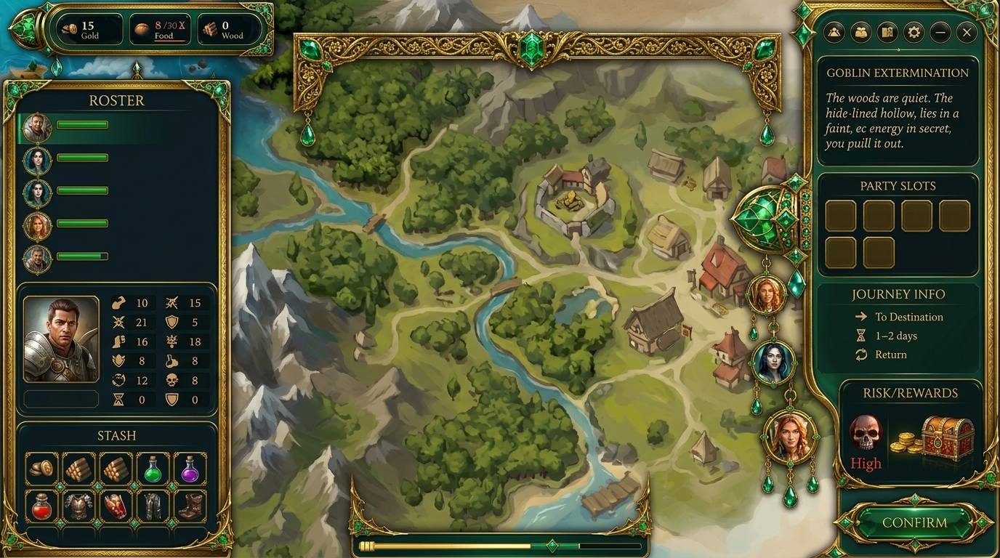
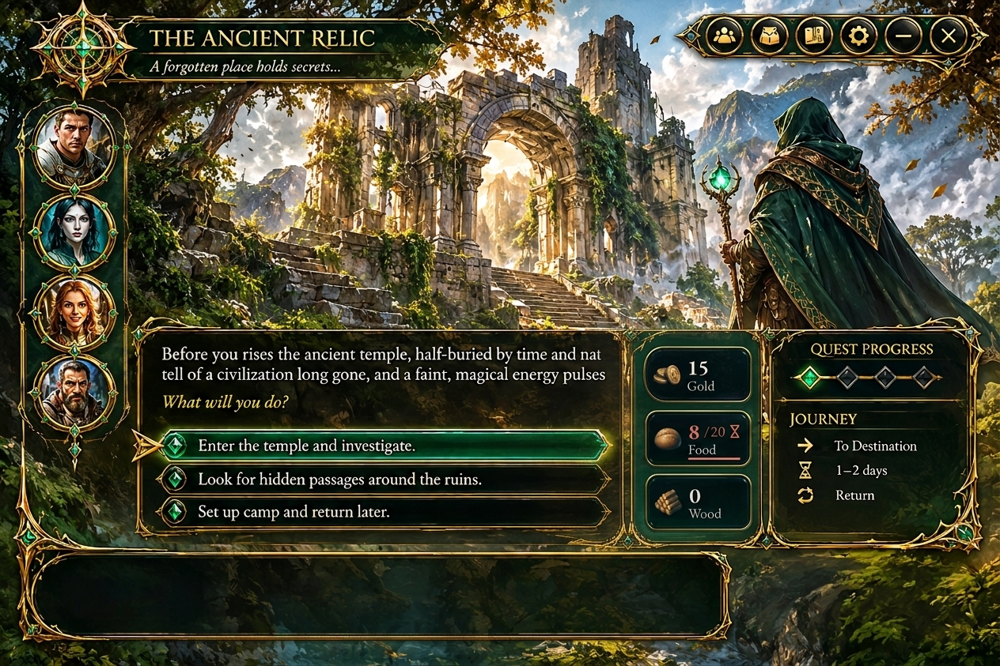
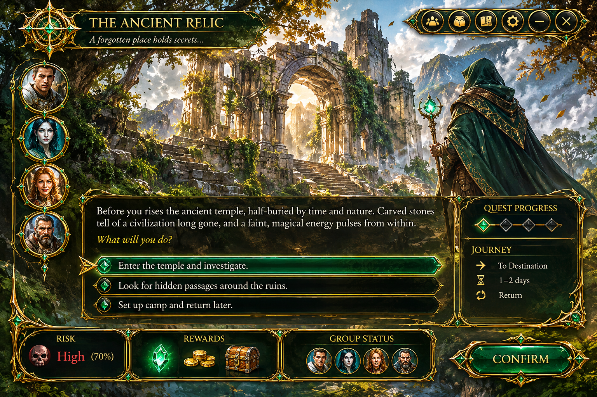

CANONE ZANARA — gli elementi già firmati
I riferimenti approvati a cui ogni nuovo componente si ancora. → le nuove tavole
CASSETTO PLANNER — firmato (cornice, cucitura, spilla)
Il dossier opulento: cucitura a voluta d'oro + spilla smeraldo + pendenti, cartiglio titolo, zone interne incorniciate. La lingua da cui tutte le altre cornici discendono — non un'altra cornice, LA cornice.

GHIERA — firmata (3 artigli, fermo a punto smeraldo)
Il sistema reale reskinnato: anello oro intagliato, 3 artigli, fermo a punto smeraldo (niente cuore). Stessa meccanica seat certificata.

INTERNI CASSETTO — firmati
Risk = medaglione teschio · Journey = banda segmentata (gambe label+numero). Le due zone interne approvate.

TRIAD — composizione firmata (opzione A)
Mobile compagnia sx (roster+scheda+stash) + mappa viva al centro + cassetto planner dx. La disposizione della famiglia pianificazione.

QUEST RUN — direzione Ancient Relic
Il teatro della run — la direzione da adattare alla superficie reale (scena cinematografica, narrativa, scelte).

ESTETICA — il riferimento che hai indicato
Il planner ChatGPT — il livello di opulenza pittorica da eguagliare: oro denso, intaglio profondo, smalto smeraldo saturo, gemme.
